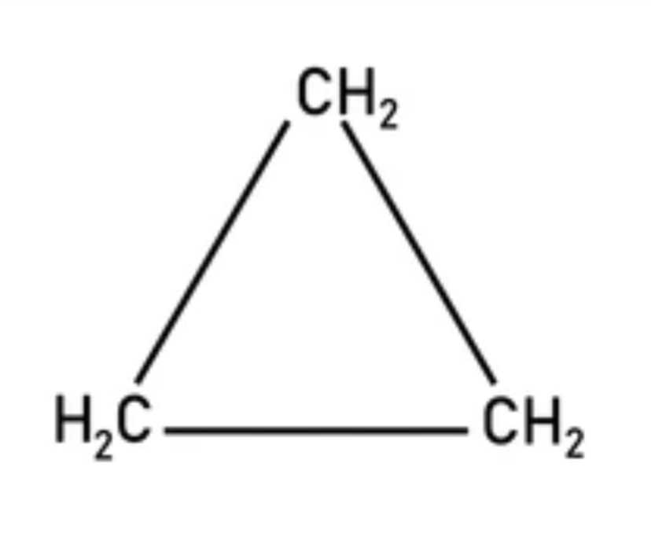
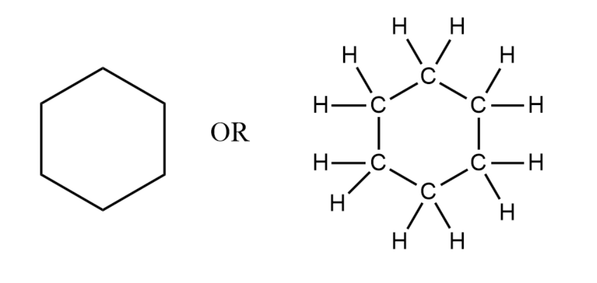
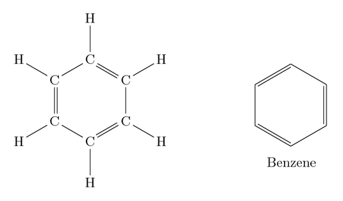
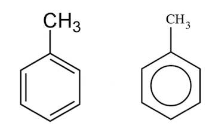

प्रश्न - कार्बनिक यौगिकों का वर्गीकरण कीजिए।
उत्तर - कार्बनिक यौगिकों को संरचना के आधार पर दो मुख्य वर्गों में बाँटा गया है -
1. खुली श्रृंखला या ऐलिफैटिक यौगिक (Open Chain) -
वे यौगिक जिनमें कार्बन परमाणु खुली श्रृंखला बनाते हैं। इन्हें ऐलिफैटिक यौगिक भी कहते हैं। ये दो प्रकार के होते हैं -
(a) सीधी श्रृंखला यौगिक - इसमें सभी कार्बन परमाणु एक सीधी पंक्ति में जुड़े होते हैं।
$ CH_3 - CH_2 - CH_2 - CH_3 $
नॉर्मल ब्यूटेन
(b) शाखित श्रृंखला यौगिक - इसमें मुख्य श्रृंखला से एक या अधिक ऐल्किल समूह शाखा के रूप में जुड़े होते हैं।
$ \begin{matrix} CH_3 - CH - CH_3 \\ | \\ CH_3 \end{matrix} $
आइसो-ब्यूटेन (2-मेथिल प्रोपेन)
2. बंद श्रृंखला या चक्रीय यौगिक (Closed Chain) -
वे यौगिक जिनमें कार्बन परमाणु आपस में जुड़कर एक बंद वलय बनाते हैं। ये दो प्रकार के होते हैं -
(a) कार्बचक्रीय यौगिक - इनकी वलय केवल कार्बन परमाणुओं से बनी होती है। ये पुनः दो प्रकार के होते हैं -
(i) ऐलिसाइक्लिक यौगिक - ये ऐलिफैटिक यौगिकों के समान गुण दिखाते हैं।

साइक्लोप्रोपेन

साइक्लोहेक्सेन
(ii) एरोमैटिक यौगिक - इनमें बेन्जीन वलय होती है। इनमें विशेष गंध होती है।

बेन्जीन

टॉलूईन
(b) विषमचक्रीय यौगिक - इनकी वलय में कार्बन के साथ-साथ नाइट्रोजन, ऑक्सीजन या सल्फर जैसे अन्य परमाणु भी होते हैं।

पिरिडीन